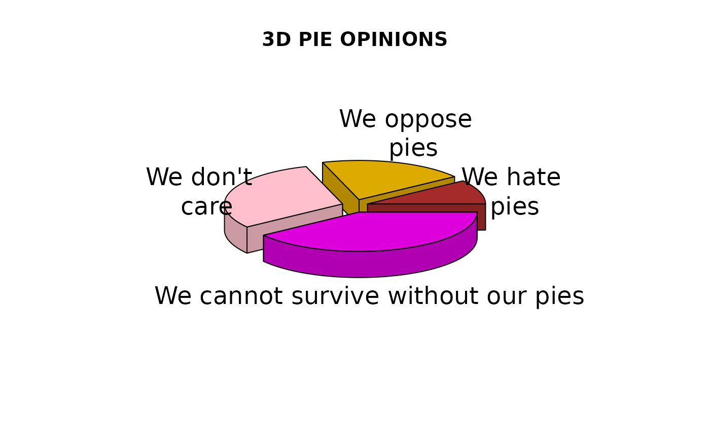
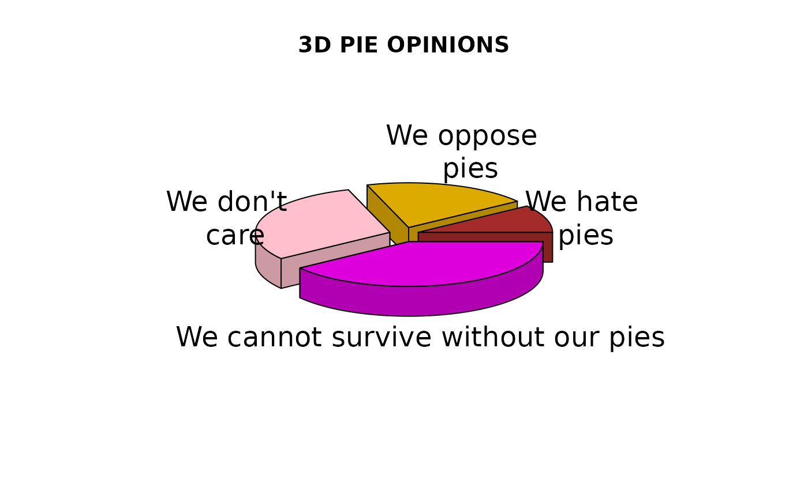

Display a 3D pie chart
pie3D.RdDisplays a 3D pie chart with optional labels.
Arguments
- x
a numeric vector for which each value will be a sector
- edges
the number of lines forming an ellipse
- radius
the radius of the pie in user units
- height
the height of the pie in user units
- theta
The angle of viewing in radians
- start
The angle at which to start drawing sectors.
- border
The color of the sector border lines
- col
The colors of the sectors
- labels
Optional labels for each sector
- labelpos
Optional positions for the labels (see examples)
- labelcol
The color of the labels
- labelcex
The character expansion factor for the labels
- sector.order
Allows the operator to specify the order in which the sectors are drawn.
- explode
The amount to "explode" the pie in user units
- shade
If > 0 and < 1, the proportion to reduce the brightness of the sector color to get a better 3D effect.
- mar
Margins around the pie.
- pty
Whether to force a square plot region or not. (see Details)
- ...
graphical parameters passed to plot
Details
pie3D scales the values in x so that they total 2*pi, dropping zeros and NAs. It then displays an empty plot, calculates the sequence for drawing the sectors and calls draw.tilted.sector to draw each sector. If labels are supplied, it will call pie3D.label to place these outside each sector. If supplied, the number of labels, label positions and sector colors must be at least equal to the number of values in x. If the labels are long, it may help to reduce the radius of the pie or change the position as in the example below.
In order to make the dimensions of the pie reasonably accurate, a square plot region (pty="s") is the default. If pty is set to "m", the user can change the margins, usually resulting in a non-square plot area. This will probably distort the pie somewhat.
Note
Due to the somewhat primitive method used to draw sectors, a sector that extends beyond both pi/2 and 3*pi/2 radians in either direction may not display properly. Setting start to pi/2 will often fix this, but the user may have to adjust start and the order of sectors in extreme cases. The argument sector.order allows the user to specify a vector of integers that will override the calculation of the order in which the sectors are drawn. This is usually necessary when a very large sector that extends past 3*pi/2 is overlapped by a smaller sector next to it. As a last resort, the user can try setting explode to zero. This only draws the top and outer sides of each sector.
Also due to the sector drawing method, setting theta to values smaller than about pi/8 or larger than about pi/4 will produce obviously misaligned sectors.
Contributed fixes and improvements: thanks to Jesse Brown for the "shade" fix and Qinghua Zhao for alerting me to the problem with labels and margins
Examples
pieval<-c(2,4,6,8)
pielabels<-
c("We hate\n pies","We oppose\n pies","We don't\n care","We just love pies")
# grab the radial positions of the labels
lp<-pie3D(pieval,radius=0.9,labels=pielabels,explode=0.1,main="3D PIE OPINIONS")
 # lengthen the last label and move it to the left
pielabels[4]<-"We cannot survive without our pies"
lp[4]<-4.8
# specify some new colors
pie3D(pieval,radius=0.9,labels=pielabels,explode=0.1,main="3D PIE OPINIONS",
col=c("brown","#ddaa00","pink","#dd00dd"),labelpos=lp)

# lengthen the last label and move it to the left
pielabels[4]<-"We cannot survive without our pies"
lp[4]<-4.8
# specify some new colors
pie3D(pieval,radius=0.9,labels=pielabels,explode=0.1,main="3D PIE OPINIONS",
col=c("brown","#ddaa00","pink","#dd00dd"),labelpos=lp)
